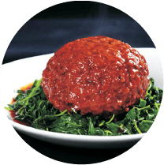
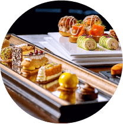
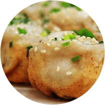

Restaurants
順風港湾
伝統的な上海料理から、創作中華料理まで、
色々と料理が楽しめる。

泰兴路175号経典茂名裙房4階
地下鉄南京西路駅徒歩5分
予算：150元
Atto Primo
本格的なイタリアンレストラン。
窓際の席からは外灘の夜景を見ながら食事が出来
雰囲気最高です。

外灘5号广東路20号2楼
地下鉄南京東路駅徒歩10分
予算：400元
成隆行蟹王府
上海蟹を堪能する専門店。
そして10～11月が旬。
この時期の上海蟹は蟹味噌がたっぷり詰まっていてとっても美味しい。
九江路216号
地下鉄南京東路駅徒歩10分
予算：400元
佳家湯包
上海名物と言えば小籠包。
味にうるさい上海人にも一目置かれる有名店。
麗園路62号
地下鉄陸家浜路駅徒歩10分
予算：40元
小楊生煎
上海の代表的なファーストフード、
焼小籠包のチェーン店。
香ばしい焦げ目と皮のなかのジューシーな肉汁がとっても美味しいです。

黄河路97号
地下鉄人民広場駅徒歩5分
予算：4 30元
出典：順風港湾、Atto Primo、 成隆行蟹王府